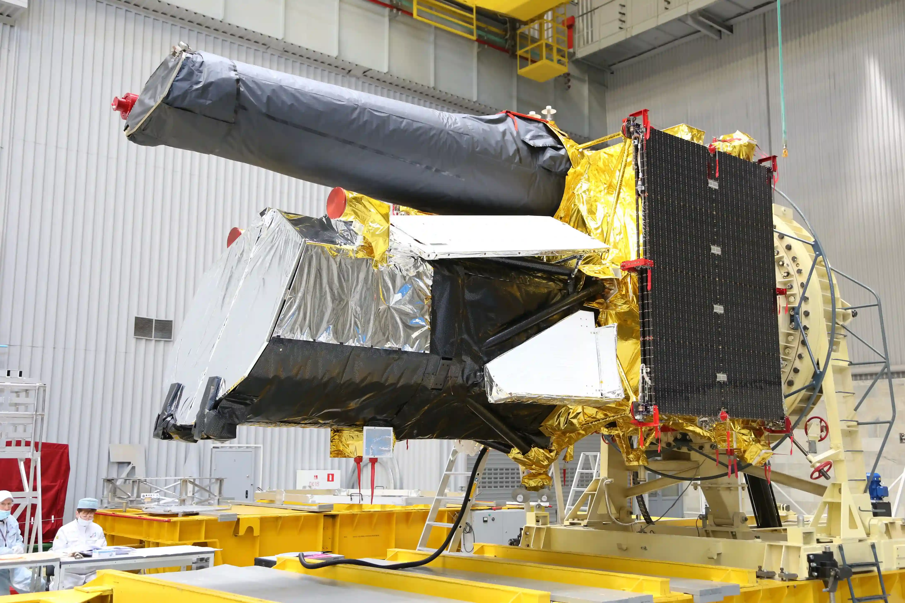
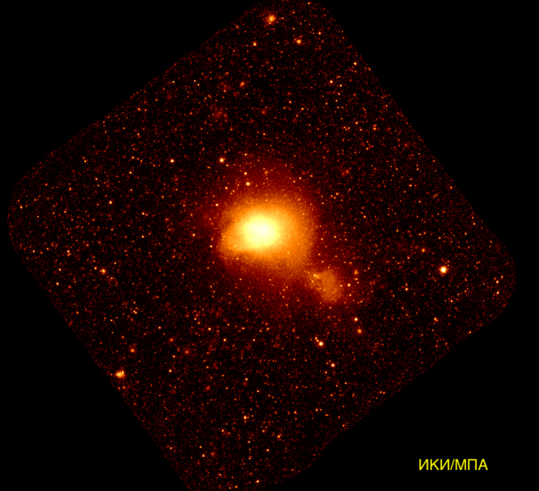

Российская наука о космосе не ограничивается пилотируемыми полётами и ракетами. Автоматические станции и уникальные приборы, созданные в Институте космических исследований РАН, ведут фундаментальные исследования Вселенной и помогают изучать планеты Солнечной системы, часто работая там, где не ступала нога человека.
Главным событием последних лет стал запуск обсерватории «Спектр-РГ». Её российский телескоп ART-XC работает без сбоев, построив новую, в десятки раз более точную карту ярчайших областей Вселенной в рентгеновском диапазоне. В 2024 году создатели телескопа стали лауреатами премии правительства РФ. А в 2029 году на смену ему готовится прийти «Миллиметрон» («Спектр-М») — 10-метровый телескоп, который разместят в 1,5 млн км от Земли для поиска воды и изучения чёрных дыр.

За пять лет работы «Спектр-РГ» открыл миллионы новых источников рентгеновского излучения — сверхмассивных чёрных дыр, скоплений галактик, активных ядер галактик. Российский телескоп ART-XC определяет их положение с точностью до четверти угловой минуты, что позволяет затем наводить на них наземные обсерватории для детального изучения.
Российские приборы исследуют и другие планеты. На американском марсоходе Curiosity уже много лет работает нейтронный спектрометр ДАН, созданный в ИКИ РАН. С его помощью учёные выяснили, что содержание воды в марсианских породах на пути ровера составляет от 2 до 6 процентов. Данные ДАН помогли подтвердить, что в кратере Гейл, где работает Curiosity, когда-то было древнее озеро.
Другой российский прибор, «ФРЕНД», установлен на европейском спутнике Марса TGO (миссия ExoMars) и составляет самую детальную карту подповерхностной воды. А нейтронный детектор HEND на борту американского зонда Mars Odyssey с 2001 года ищет водяной лёд под поверхностью планеты и изучает сезонные изменения её полярных шапок.
Российские учёные смотрят далеко вперёд. В рамках нового федерального проекта «Космическая наука» до 2036 года запланированы десятки миссий. Среди них:
- Лунная программа: шесть автоматических станций для изучения и освоения спутника Земли, включая «Луну-26», «Луну-27» и доставку грунта
- «Венера-Д»: запуск автоматической станции к Венере для изучения её атмосферы и поверхности намечен на 2036 год
- Астрофизика: новые обсерватории «Спектр-УФ» и «Спектр-М» для изучения далёкого космоса
Директор ИКИ РАН Анатолий Петрукович отмечает: сегодня Россия не только возвращает себе лидерство в космической науке, но и закладывает основу для будущих открытий, которые изменят представление человечества о Вселенной.